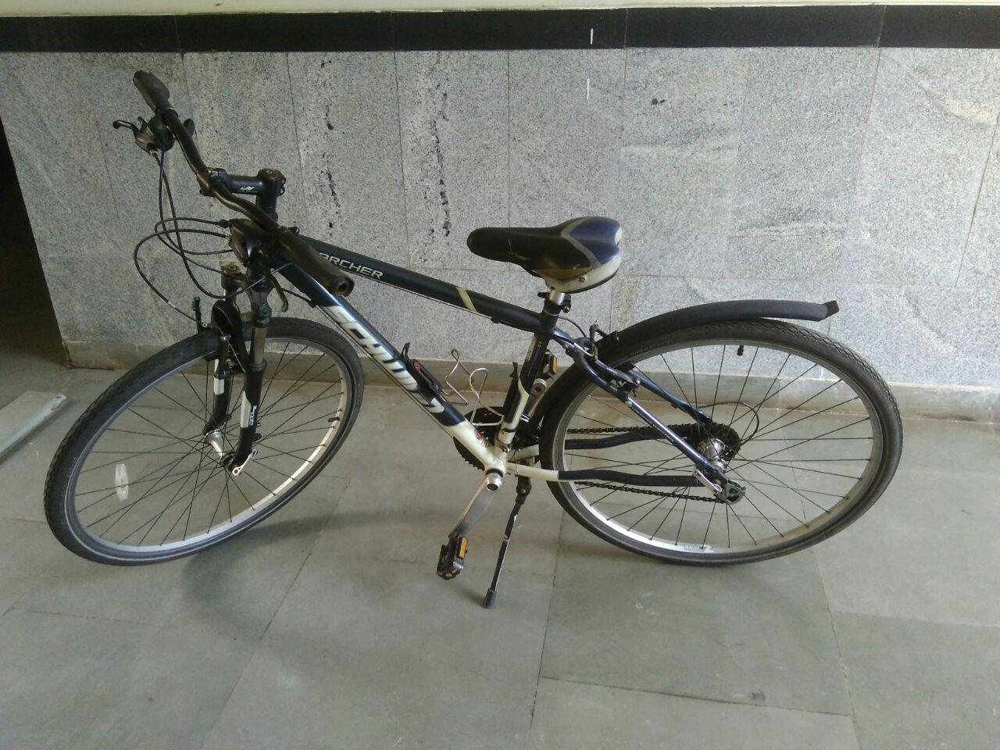
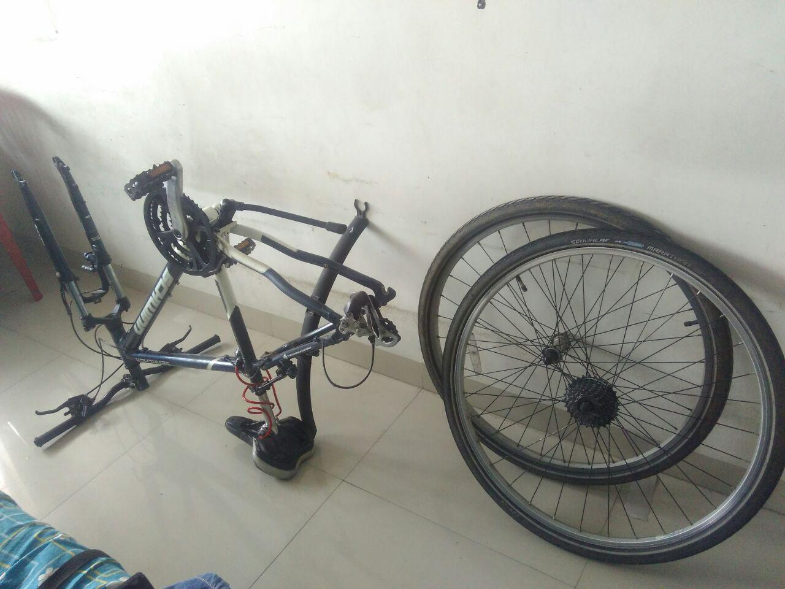

My First Bicycle
Prologue¶
I have been interested in bicycles for as long as I can remember. For
me they represent the ultimate form of Open Design and practical implications of
physics in a much more feel-able way.
However I never owned a geared bicycle and ever since I moved to
Bangalore I wanted to buy one but my parents would not let me buy one
(I was also asking them to buy me one since I am not financially
independent yet!). So after I got the job I saved up enough money to
buy one myself. :-)
The Cycle¶
I bought a Schwinn Searcher from a friend of mine. This dude studied
at IISc and he was going home after completing his studies. He had
really cared for this cycle. It is about 5 years old but the
components are really really well maintained.
Here it is. 
Before riding a premium cycle I had no idea that premium bicycles were
this good. The first time I rode a premium bicycle was a btwin
original. I had borrowed this cycle from Arun and we went for a 50k
ride. This was also the first time I rode more than 10k. This was
probably one of the reasons why I decided to buy this one.
I went on 2 moderate distance rides (around 50k) with Arun. It was
fun. We went to Hesarghatta both times.
I ride the cycle mostly for commute. I travel to and from college on
this thing.
Riding in Bangalore is difficult especially with the stop-and-go
traffic. It takes a lot of courage to ride The bicycle in the city. I
still haven't mustered the courage to ride it after sundown. To be
honest I don't have safety lights. (yet) :-P
I am not riding the cycle as much currently because Bangalore is
having unpredictable and heavy rainfalls. While I do not mind getting
wet in the occasional downpour; I do mind getting my bicycle all wet
and dirty. Its a pain to clean and its not good for the parts.
Riding in the rain with no mudguards is just plain stupid.
The amount of water these tires can fling even on a wet road with no
puddles is just amazing. On top of that the roads here are not too
good so we do have a LOT of puddles. I didn't learn this fact until
it was too late. I was caught off guard with no mud-guards
twice. Thank You Bangalore for such a weird and unpredictable
weather.
On a positive note I do realize exactly how important mudguards are! :-P
Cleaning The Bike¶
One of the best things about owning a bicycle is the mechanical
part. You get to be the cool mechanic and fix any major/minor issues
that crop up. I do enjoy the occasional indexing and lubrication
rituals of the gears. But, after buying this I had never really washed
the bicycle completely. So on a random Sunday I got to it gave the
cycle a complete thorough wash. It was amazing. I opened up the chains
(without any tools; thanks to the master links...) and opened up the
wheels and stuff. It was a great experience.
I kept the chain out to dry for about 2 days but I had to install it
for a quick ride because of an emergency.
I was planning to clean the chain using kerosene but that never
happened. It's on my to-do list though!
Here is a photo of the process. 
Even though I can not put a finger on it, I would it is the open-ness
of the whole system that appeals to me at a personal level. As much as
I know myself I would pick a not-so-good but hack-able piece to
technology over a amazing but not hack-able piece of technology on any
fine day. Whats the point of using something if you can not figure
out how it works and tweak it.
The best thing about bicycles is the open-ness. I think I have used
thus term quite a lot and not explained it. By open-ness I mean that I
can open up the bicycle completely using just a bunch of Allen
Keys. Moreover I can put it back together and it will work just like
before. I can also buy switch random parts and things will still
work. For any repair big or small the only limiting factor is the
availability of relevant tools. If the tools are present then I can
fix almost any foreseeable issue with the bicycle be it a tube puncture
repair or changing the drive-train.
What I am saying is that a bicycle gives me a sense of
self-sufficiency. Also it has the right mixture of diy-ness that I
find most lacking in people now a days. (:-P)
Also I am a person knows that Climate Change is real and we need to do as much as we can so that the future is brighter. So it's not a bad feeling to know that every-time I am riding the cycle I am actually making a positive impact in the world.
I also try to inspire kids/their parents to take cycling seriously because its good for the environment and for the body.
Last but not the least. Cycling is a great exercise.
Conclusion¶
Start Cycling; Keep Cycling.
p.s. I do not click many photos and my phone camera was behaving funny with a custom ROM so the pics can be a bit off!